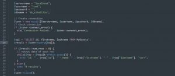
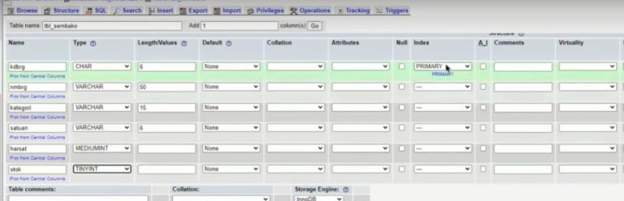
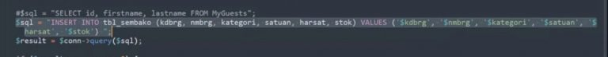
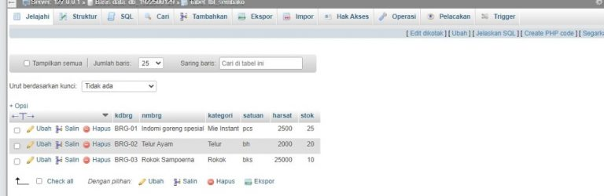
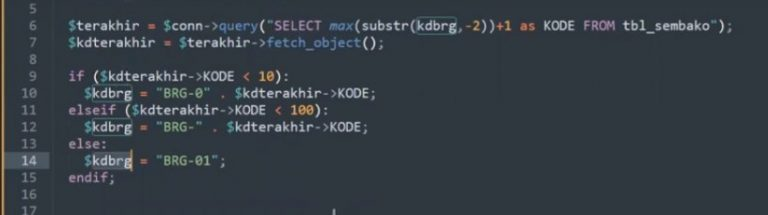
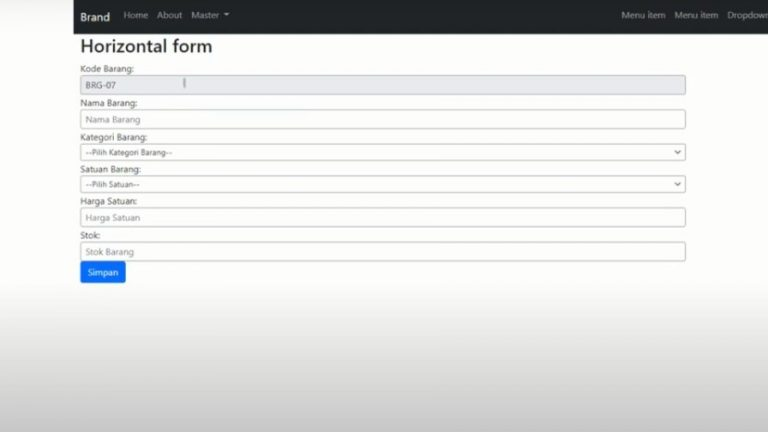

NIM: 1922500071
Nama: Tri Utami
Kelompok: SI5J
Hasil atau kesimpulan dari pertemuan 13 adalah:
- Langkah pertama yang harus dilakukan yaitu cari pada w3school variabel untuk membuat koneksi. lalu copy dan pastekan pada dile sembako.php
- Lalu yang harus kita lakukan yaitu membuat tabel pada database yang kita gunakan, tabel berikut terdiri dari kodebarang, nama barang, kategori, satuan, harga satuan dan stok
- Langkah membuat code query agar record bisa tersimpan. query nya
- Lalu yang akan terjadi apabila kita mengisi record yang ada pada forms plugin tersebut data nya akan tersimpan pada database
- Selanjutnya jika kita ingin menggunakan fungsi penomoran otomatis yang kita lakukan adalah copy query yang ada pada database lalu pastekan pada file sembako.php
gambar:





